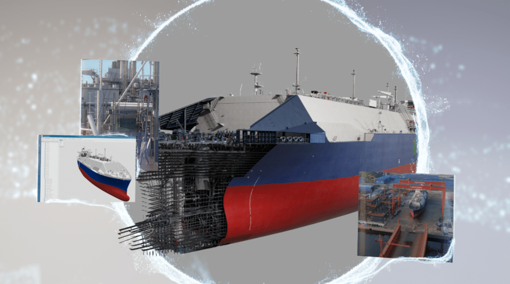

This project focuses on developing Vision AI for industrial quality inspection in real-world environments. It emphasizes robust perception, practical applicability, and reliable deployment-oriented workflows for industrial inspection tasks.

The purpose of this project is to build Vision AI models that can support industrial quality inspection under practical conditions. Rather than focusing only on model accuracy, the project also requires careful consideration of robustness, usability, and how the perception pipeline fits into real operational settings.
Through this work, I have been expanding my understanding of industrial AI development, especially in contexts where computer vision models need to be dependable, adaptable, and relevant to real inspection workflows.
This project has helped me deepen my perspective on practical Vision AI development in industrial settings. It continues to strengthen my ability to think beyond isolated model performance and toward complete, reliable systems that can operate in real environments.